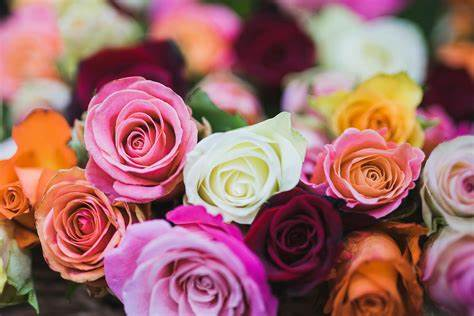

Introduction
Most rose species are native to Asia, with smaller numbers being native to North America and a few to Europe and northwest Africa. Roses from different regions of the world hybridize readily, giving rise to types that overlap the parental forms, and making it difficult to determine basic species. Fewer than 10 species, mostly native to Asia, were involved in the crossbreeding that ultimately produced today's many types of garden roses.